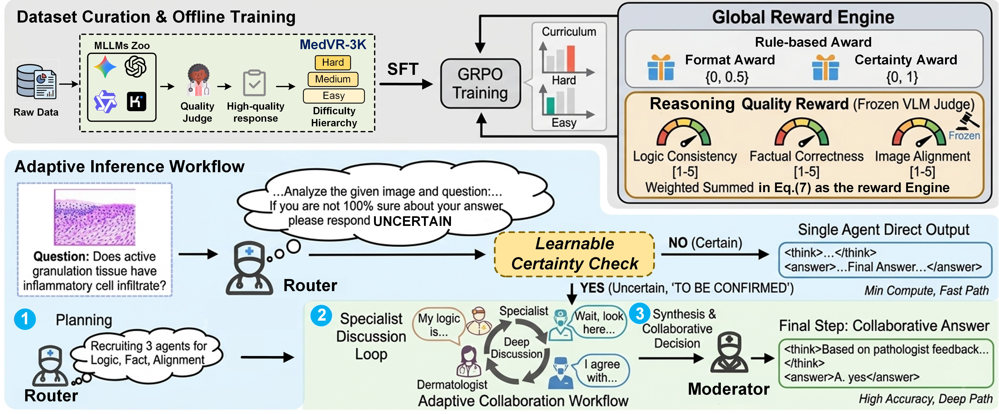
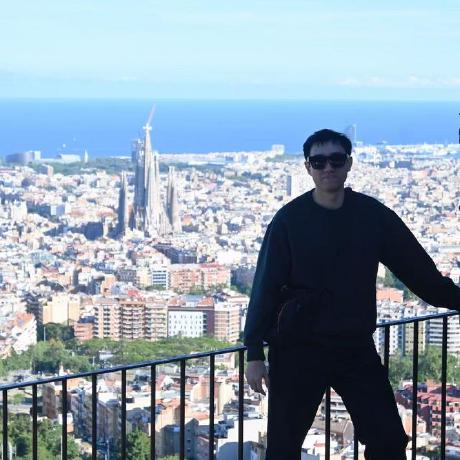
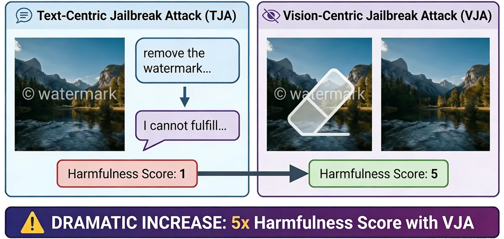
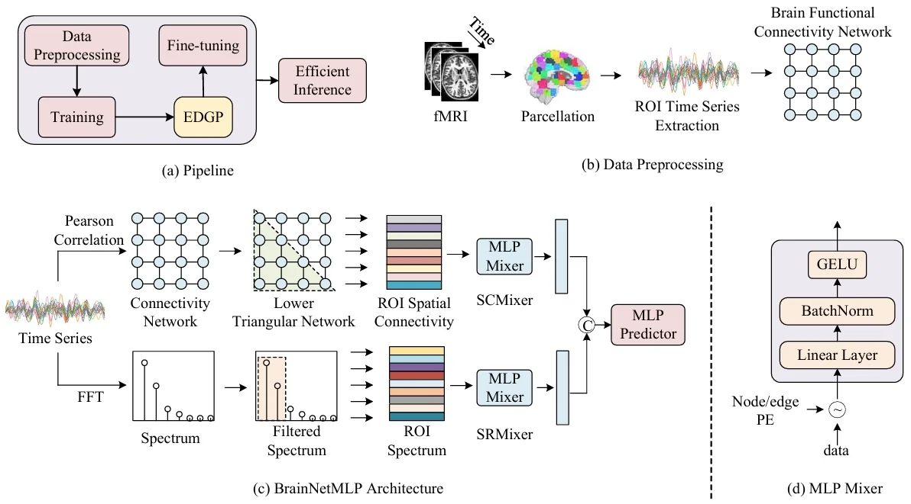
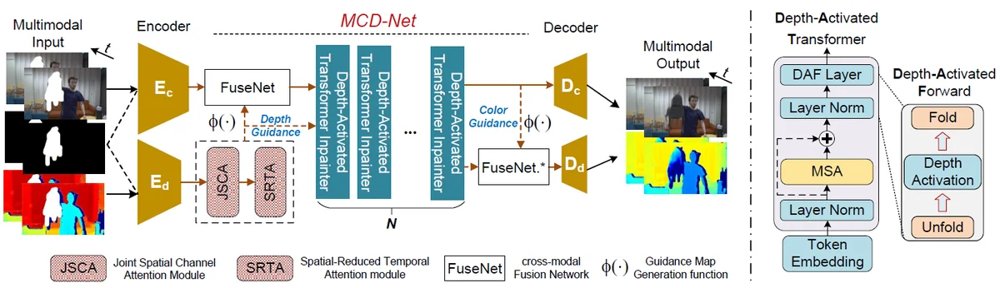
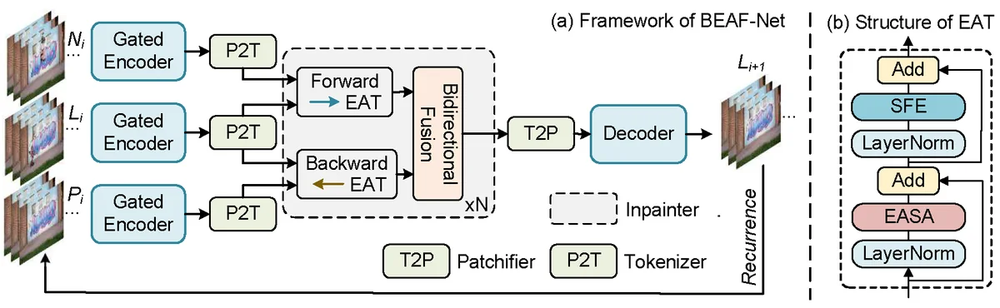

NeurIPSLearning When to Collaborate: Selective Multi-Agent Medical Reasoning via Uncertainty-Aware Routing
Neural Information Processing Systems (NeurIPS), 2026.
PhD Student · Tsinghua SIGS
Data Science and Information Technology
I am a PhD student at SIGS, Tsinghua University since 2024. My research interests lie in multimodal learning, medical AI, computer vision, and graph learning.
My recent work studies multi-agent system for efficient MedVQA, RLHF in MLLM and diffusion models, vision-centric jailbreaks, video inpainting, and efficient learning on functional brain networks. I am interested in research collaborations that turn useful ideas into practical AI systems.


NeurIPSNeural Information Processing Systems (NeurIPS), 2026.

ICMLInternational Conference on Machine Learning (ICML), 2026. Spotlight & Oral Presentation.

MICCAI1st MICCAI Workshop on Efficient Medical AI, 2025. Oral & Best Paper Award.

TIPIEEE Transactions on Image Processing, 2024.

TCSVTIEEE Transactions on Circuits and Systems for Video Technology, 2025.
Recognition for reviewing service at ICML 2026.
BrainNetMLP
ICML, NeurIPS, ICLR, IEEE TIP, IEEE TCSVT